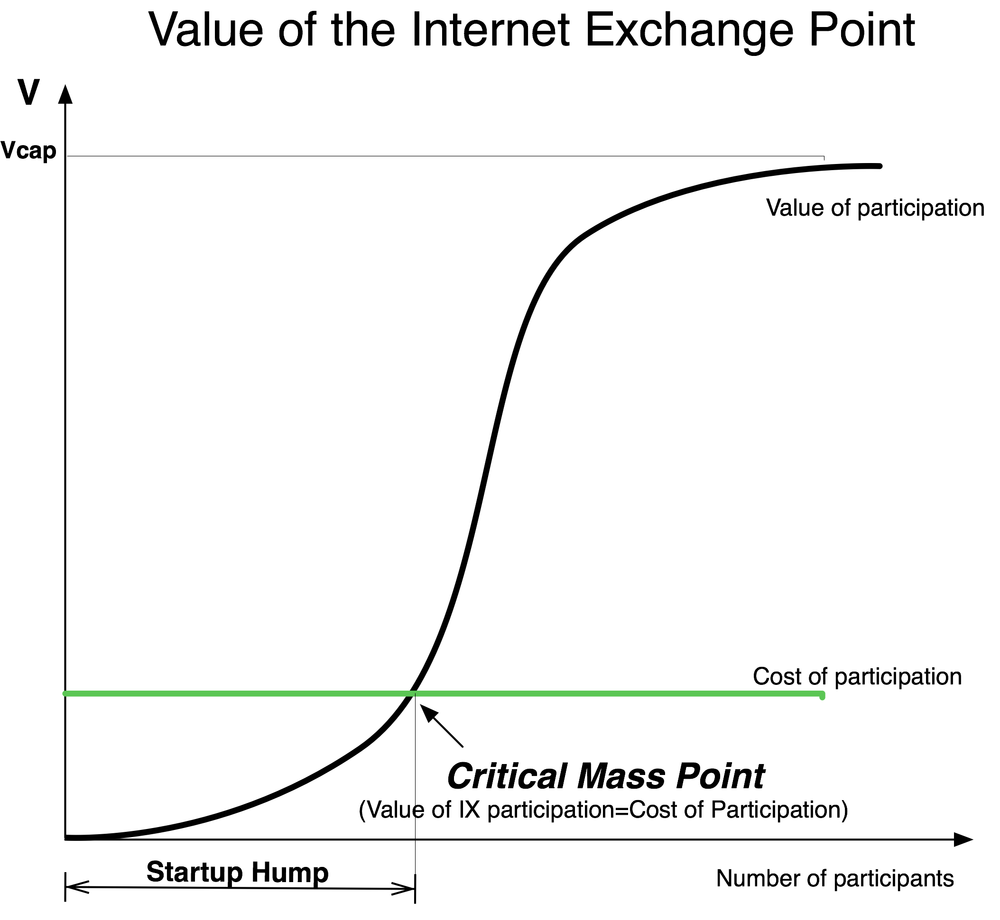
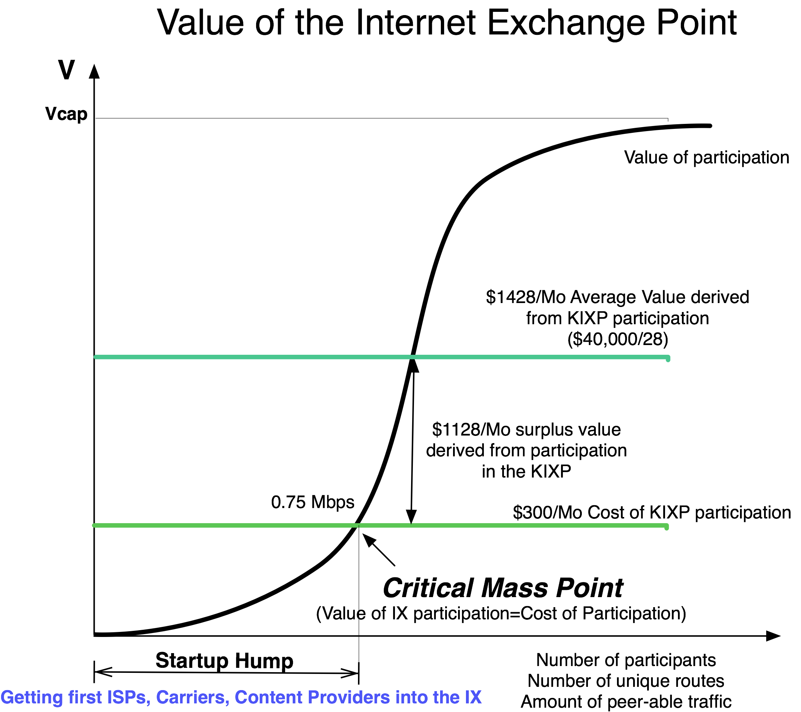
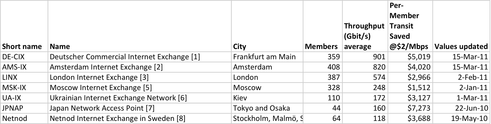

The Value of an IXP
Building an IXP is relatively easy. Building a successful IXP is hard.
What is a successful IXP?
Definition: A Successful IXP is an IXP where the value derived from peering exceeds the cost of peering.
To understand the value side of an IXP, we need to talk about Network Externality.
Definition: Network Externality is the economist term for the characteristic of a product or service whose value is proportional to the others using the product or service.
The classic example of Network Externality is a fax machine. If only a single fax machine existed, it would have no inherent value – there would be no one to receive the first fax! When the second fax machine was deployed, the first machine could exchange images with it, so the value for both machines was greater. Deployment of the third fax machine created the potential to send faxes to three parties, so the fax machine was inherently more valuable still. To generalize, as the number of fax machines grew, the value of owning a fax machine grew.
IXPs exhibit the Network Externality effect as well, as shown in Figure 13-1.

Figure 13-1. The IXP network externality effect.
Figure 13-1 shows a plot of the value of the IXP as a function of the number of participants. As more participants connect to the exchange point, more participants can peer with each other. From the point of view of the participants, the value of the exchange point increases with each potential peer. The tough part is getting those first participants in, a phase called the “Startup Hump.”
The IXP “Startup Hump”
An IXP must somehow attract those first participants when there is no one else to peer with at the IXP. The “IXP Startup Hump” is where the real heavy lifting occurs, because it can sell only the concept of a successful IXP, without the immediate demonstrable value. Every IXP has to make its way through these first sales gauntlets.
When at first two ISPs at the IXP peer with each other, they both derive some value from the IXP. Their traffic is exchanged directly and perhaps redundantly, and it is typically settlement-free. This traffic may bypass a more expensive transit alternative. Perhaps the traffic is between two Tier 1 ISPs that find it more cost-effective to interconnect using cross-connects in a building instead of point-to-point circuits. In any case, when these two parties peer with each other, they both derive value from their participation at the IXP.
When the third ISP joins the IXP, three ISPs can potentially peer with each other. As a result, the value of the IXP to the participants increases. To generalize, the more populated the IXP, the more traffic that can potentially be exchanged, and therefore, the more valuable the IXP.
The rest of this chapter deals with navigating through this initial phase.
Notes from the field.
The Equinix Start-Up Hump
To demonstrate the Startup Hump, consider Equinix, whose first customer was an electronic greeting card company called “Blue Mountain Arts.” At the time, our first building in Ashburn, Virginia, had just finished construction and had no carriers, no ISPs, and no content companies. It was as valuable as an empty house on an uninhabited, uncharted island.
The primary contact at Blue Mountain Arts had seen my presentation at a peering event and asked if we had any more space left at the facility. It was still the boom years, and the economy was humming. Blue Mountain Arts was on a tight deployment schedule and wanted to get the paperwork started as early as possible. With this first customer we had something tangible to talk to carriers and other ISPs about – this customer represented circuit and transit sales potential. This first sale took months, but then there was a real story to tell, some credibility, and a reason to build in. Ashburn was no longer a data center island.
We have discussed the value of the IXP, but from a participant perspective, the cost of peering must be considered. An ISP may need to purchase a circuit into the IXP, lease colocation space and a port on a Public Peering fabric, purchase equipment, etc. The ISP must be able to justify these costs with the value it believes they will derive. The cost of peering is shown as a horizontal line in Figure 13-1.
Where the value of the IXP and the cost of participation intersect is a key point called the “IXP Critical Mass Point.”
Definition: The IXP Critical Mass Point is where the derived value of the IXP exactly equals the cost of participation.
Beyond the Critical Mass Point, the IXP has a provable value proposition since it provides more value than it costs. As a result, the IXP often experiences exponential growth in the number of participants.
The IXP Exponential Growth
Why does the IXP value curve show an exponential growth? The growth is exponential because there are n peers that can peer with (n-1) other peers, leading to the IXP facilitating n(n-1) connections with peers. Up to n(n-1)/2 interconnections are possible if you don’t include both sides. Since the value is so much higher than the cost of participation, it gets easier to sell and the value grows for everyone as more people join.
Life is good for the IXP when in this situation. Salespeople become order takers, the sales cycle is compressed, customers want the service, the IXP can increase prices, and ISPs will not move out. This cycle continues until the IXP runs out of capacity.
Not surprisingly, all new IXPs want to get to and past the Critical Mass Point.
The IXP Is Full
The IXP may reach a point at which it is out of capacity and can’t expand – or chooses not to expand. The number of peers in this scenario stays constant. Over time more traffic may be peered, but the inability to add additional peers results in a sustained but flat value proposition.
A Simple Calculation of the Financial Value of an IXP
We can estimate the aggregate value of an IXP to its population by calculating the amount of traffic that is freely peered instead of traversing transit. For the sake of simplicity, we assume that all traffic peered at the IXP is exchanged, as the next-best alternative, across a commodity Internet Transit at market prices.
valueOfIXP = mbpsExchanged * avgTransitPrice - CostOfPeering
Example 1. The DE-CIX passed about 1Tbps (1,000,000 Mbps) of traffic in 2010. Assume that it charges $3500 per month uniformly across its 350 participants, and that the market price for transit is $2/Mbps.
- What is the value of the DE-CIX?
- What is the per-user value derived from peering?
- Is the DE-CIX past the Critical Mass Point?
Answers
a) To calculate the value derived by this population, we need to multiply that peered traffic volume by the market price of transit, its next-best alternative.
valueOfDE-CIX = mbpsExchanged * avgTransitPrice - CostOfPeering
valueOfDE-CIX = 1,000,000 Mbps * $2/Mbps - 350 members * $3500/month
valueOfDE-CIX = $2,000,000 - $1,225,000 = $775,000/month
From this calculation we can see that the DE-CIX is saving its peering population about $775,000 per month. The value of this IXP is $775,000 per month to its peering population.
b) To calculate the per-user value of the IXP, we simply divide the value of the IXP across the number of participants. The DE-CIX per-user value, therefore, is $775,000/350 = $2214/month
From this calculation we can say that on average, the DE-CIX participant saves $2214 per month from participation.
c) Since the per-user value of the IXP is greater than $0/month, this IXP must be past the Critical Mass Point.
Example 2. As of 2010, the Kenya IXP (KIXP) had only 28 members, each paying $300 per month for a port on the switch. In this Internet Region the price of transit is high ($400/Mbps) and the amount of traffic exchanged at the KIXP is low (only a few Mbps). This scenario may lead one to believe the KIXP is not as valuable as the large IXPs in Europe where the amount of traffic peered is measured in Tbps.
a) If the market price for Internet Transit in Kenya is $400/Mbps and the value of the traffic peered at the KIXP is $40,000 per month as shown in Figure 13-2, how much traffic is peered at the KIXP? What is the Peering Break-Even point at the KIXP?
Answer
a) The value of the peered traffic is $40,000 per month, and with the price of transit at $400/Mbps we can see that the members of this IXP peer ($40,000/$400/Mbps) 100 Mbps per month.
The price of transit is so high that it takes only 0.75Mbps ($300/$400/Mbps) of free peering traffic for peering to make financial sense at the KIXP!
To the population that peers there, the KIXP provides ($40,000 per month/28 members) $1128 per month in surplus value on average, as shown in Figure 13-2.

Figure 13-2. Value of the Kenya IXP (KIXP).
Example 3. The Belgium Neutral Internet Exchange (BNIX) is located in the outskirts of Brussels. In 2010 it had 44 participants that collectively peered about 30Gbps (30,000Mbps) in a market where the price of transit is about 5 euros per Mbps. The cost of peering, ignoring the transport, colocation, and equipment costs, is 1000 euros/month.
a) What is the value of the BNIX to its population?
Answer
a) The value of the BNIX is
valueOfBNIX = mbpsExchanged * avgTransitPrice - CostOfPeering
valueOfBNIX =30,000Mbps * 5euros/Mbps - 44*1000euros/month = 106K euros
European examples were chosen here because the European IXPs freely share their public switch traffic statistics on the Internet. Why not? It helps to demonstrate their value.
Consider Table 13-1, which compares several large IXPs.
Table 13-1. Several large IXPs with the calculated (estimated) per-user derived value (Source: Wikipedia, July 2012).

We added the column “Per-Member Transit Saved@$2/Mbps” column to show that each of these IXPs is beyond the Critical Mass Point.
Criticisms of the Simple Calculation
Some people consider the IXP traffic volume calculation to be flawed in a variety of ways.
The strongest criticism is that IXP value rankings such as this one ignore the traffic that traverses Private Peering sessions. A few years ago, the LINX started migrating some of its larger traffic exchangers from public to Private Peering. This migration extended the useful life of the LINX public switch technology, but in this ranking makes them appear less valuable.
This criticism is a valid one. IXPs typically have no visibility into Private Peering sessions and, therefore, can make no claims about how much traffic is exchanged across them. They can make estimates only about the amount of traffic that is peered. The financial value of the IXP model understates the value of these IXPs.
The second batch of criticisms focuses on the underlying assumptions in the simple model. In particular, the model assumes that
a) The traffic across the switch is all peering traffic. However in reality there could be transit traffic mixed in as well.
b) The traffic is the type of peering traffic that is bypassing the transit service, but it could be Tier 1 ISP-to-Tier 1 ISP peering.
c) The next-best alternative is transit where often the next-best alternative is peering elsewhere.
d) The cost of transport, equipment, and colocation is ignored when it could be a significant component of the cost of peering.
e) The uniqueness of the routes is ignored in the model, while an ISP would not build in to receive the same routes it received elsewhere.
f) The focus is on the “average” ISP, where all ISPs are different and will derive different value.
All of these criticisms of the simple financial value of the IXP model are valid.
This discussion leads us to a slightly more complex value model, but one that is not intended to lead us to an absolute value. The next model focuses on the parameters that make up the value of the IXP. In this model we enumerate the components of the value proposition and use them to classify the manipulations that help grow the value of the IXP.